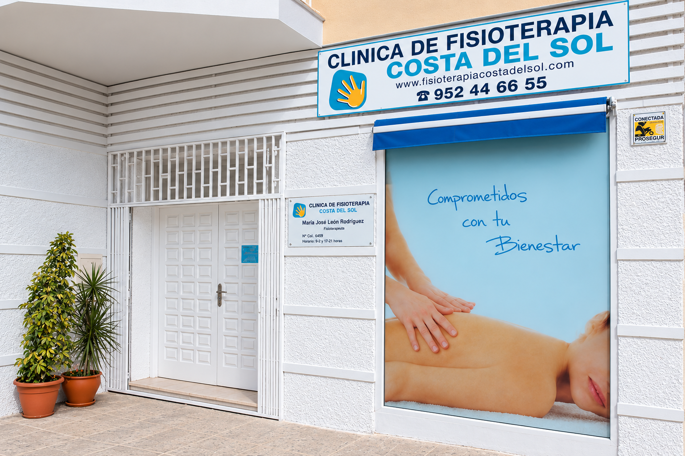
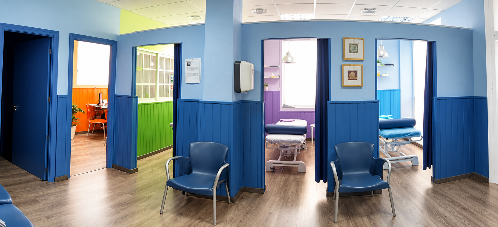
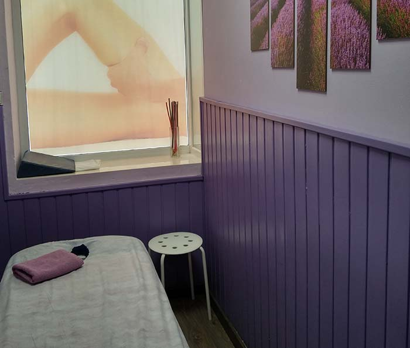
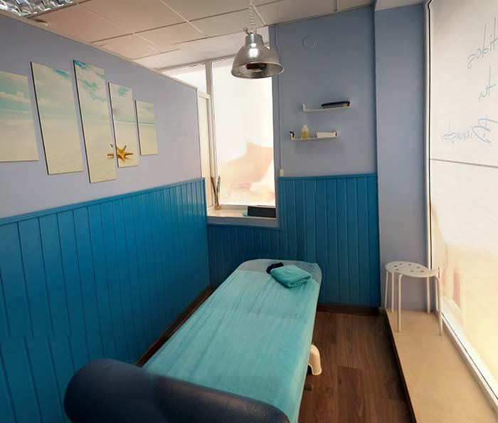
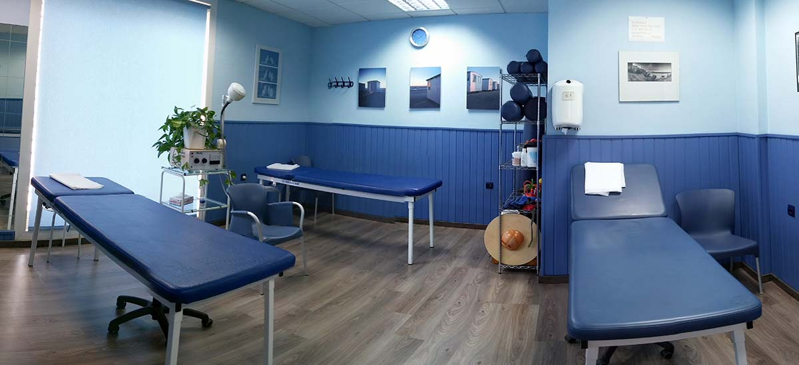

Física
Fisioterapia general
Tratamiento de dolor, movilidad y fortalecimiento para devolver la calidad de vida a pacientes con lesiones o limitaciones funcionales.
Clínica de fisioterapia
Desde 1995 cuidamos la salud y la recuperación de nuestros pacientes en la Costa del Sol con un enfoque humano, personalizado y basado en la evidencia, para mejorar su calidad de vida con cada tratamiento.

Ubicados en plena Costa del Sol, llevamos dedicados a la Fisioterapia desde el año 1995, siendo nuestro único objetivo preservar, restablecer y aumentar el nivel de salud de los ciudadanos a fin de mejorar la calidad de vida de la persona y de la comunidad.
En nuestro centro encontrará una conjunción entre profesionalidad y trato personalizado, pues siempre será atendido por fisioterapeutas diplomados universitarios y colegiados que prestan una extrema atención al paciente con un tratamiento individualizado, proporcionando en todo momento una estancia confortable y de gran calidad asistencial:
El mejor centro para la mejor rehabilitación
Nuestro afán es ofrecer la máxima calidad asistencial desde el primer contacto con el paciente, realizando un examen exhaustivo además de valorar pruebas físicas y funcionales que nos permitan realizar un diagnóstico fisioterápico objetivo, así como un posterior seguimiento de la evolución del paciente, siempre teniendo en cuenta el diagnóstico y la prescripción médica establecida.
En todo el proceso de recuperación mantenemos al paciente informado sobre su evolución y las posibilidades terapeúticas para la recuperación de su lesión, invitándole a participar activamente en el proceso de su recuperación , en un ambiente muy agradable, distendido y relajado, donde se respeta en todo momento el derecho a la intimidad, con un trato humano que asegura que nuestros pacientes se sientan a gusto y en confianza.
Un espacio pensado para tu recuperación.
Nuestra clínica combina tecnología, comodidad y trato cercano para que cada sesión se desarrolle en un entorno seguro y eficaz.




Recuperación integral, adaptada a cada persona.
Abordamos la rehabilitación desde una perspectiva individual, con protocolos claros y acompañamiento continuo durante cada fase del tratamiento.
Tratamiento de dolor, movilidad y fortalecimiento para devolver la calidad de vida a pacientes con lesiones o limitaciones funcionales.
Plan de recuperación para lesiones en deporte y entrenamiento, con enfoque en retorno seguro y control progresivo de la actividad.
Atención para esguinces, contracturas, golpes, fracturas y secuelas postraumáticas, con seguimiento y prevención del dolor.
Trabajamos con entidades y aseguradoras.
Asesoramos sobre la vía de atención más adecuada y facilitamos la tramitación para que puedas iniciar tu tratamiento con la máxima comodidad.
Tu recuperación después de un accidente, con ayuda y seguimiento.
Si has sufrido un accidente de tráfico, tratamos las secuelas físicas de forma individualizada y coordinamos la documentación necesaria para facilitar la gestión con aseguradoras y profesionales implicados.
Pide tu cita y empieza a sentirte mejor.
En cumplimiento del artículo 10 de la Ley 34/2002, del 11 de julio, de servicios de la Sociedad de la Información y Comercio Electrónico (LSSICE) se exponen a continuación los datos identificativos de la empresa.
Los derechos de propiedad intelectual del contenido de la página Web, su diseño gráfico y códigos, son titularidad de FISIOTERAPIA COSTA DEL SOL por tanto, queda prohibida su reproducción, distribución, comunicación pública y transformación, salvo para uso personal y privado. Igualmente, todos los nombres comerciales, marcas o signos distintos de cualquier clase contenidos en www.fisioterapiacostadelsol.com están protegidos por ley.
FISIOTERAPIA COSTA DEL SOL no se responsabiliza del mal uso que se realice de los contenidos de sus páginas Web, siendo exclusiva responsabilidad de la persona que accede a ellos o los utilice. FISIOTERAPIA COSTA DEL SOL no asume responsabilidad alguna por la información contenida en páginas Web de terceros a las que se pueda acceder por enlaces o buscadores de la página Web de www.fisioterapiacostadelsol.com. La presencia de enlaces en la página web de www.fisioterapiacostadelsol.com tiene finalidad meramente informativa y en ningún caso supone sugerencia, invitación o recomendación sobre los mismos.
FISIOTERAPIA COSTA DEL SOL no será responsable de posibles daños o perjuicios que se pudieran derivar de interferencias omisiones, interrupciones, virus informáticos, averías telefónicas o desconexiones en el funcionamiento operativo de este sistema electrónico, motivadas por causas ajenas; de retrasos o bloqueos en el uso del presente sistema electrónico causados por deficiencias o sobrecargas de líneas telefónicas, en el sistema de Internet o en otros sistemas electrónicos; así como de daños que puedan ser causados por terceras personas mediante intromisiones ilegítimas fuera del control de FISIOTERAPIA COSTA DEL SOL. Asimismo, se exonera a nuestra empresa de responsabilidad ante cualquier daño o perjuicio que pudiera sufrir el usuario como consecuencia de errores, defectos u omisiones, en la información facilitada por www.fisioterapiacostadelsol.com siempre que proceda de fuentes ajenas a nuestra empresa.
María José Luzón Rodríguez – Clínica De Fisioterapia Costa del Sol mantiene una política de confidencialidad de los datos facilitados por los usuarios del mismo a través de: internet, formularios en papel, comunicación telefónica o cualquier otro medio; María José Luzón Rodríguez – Clínica De Fisioterapia Costa del Sol se compromete a protegerlos, tanto en la recogida como en su tratamiento posterior, de acuerdo con lo establecido por la Ley Orgánica 15/1999, de 13 de diciembre, de Protección de Datos de Carácter Personal (LOPD), por su Reglamento de desarrollo, aprobado por Real Decreto 1720/2007, de 21 de diciembre (RLOPD), así como por el Reglamento (UE) 2016/679 del Parlamento Europeo y del Consejo de 27 de abril de 2016 relativo a la protección de las personas físicas en lo que respecta al tratamiento de datos personales y a la libre circulación de estos datos (RGPD).
María José Luzón Rodríguez – Clínica De Fisioterapia Costa del Sol garantiza que utilizará confidencialmente los datos personales de los usuarios, así como que se han adoptado las medidas de seguridad de carácter técnico y organizativo oportunas en sus instalaciones, sistemas y ficheros, en los términos establecidos por la LOPD, por el RLOPD y por el RGPD.
María José Luzón Rodríguez – Clínica De Fisioterapia Costa del Sol podrá comunicar a las autoridades públicas competentes los datos de carácter personal así como cualquier otra información que conste en sus archivos y/o sistemas informáticos, cuando sea requerido para ello y siempre de conformidad con las disposiciones legales y reglamentarias correspondientes.
En cumplimiento de lo establecido por la LOPD, el RLOPD así como por el RGPD, siempre que se soliciten datos de carácter personal a un usuario del sitio web para ser tratados, previamente al tratamiento se le facilitará la siguiente información: identidad y datos de contacto del responsable del tratamiento, datos de contacto del Delegado de Protección de Datos, finalidad para la que se obtienen los datos, plazos o criterios de conservación de los datos, decisiones automatizadas, perfiles y lógica aplicada, legitimación o base jurídica del tratamiento así como obligación o no de facilitar los datos y de las consecuencias de no hacerlo en su caso, previsión o no de cesiones ó de transferencias a terceros países, procedencia de los datos y forma de ejercer los derechos que le corresponden y de los derechos que le corresponden en lo que respecta al tratamiento de sus datos personales. Para hacer compatible la mayor exigencia de información introducida por el RGPD y la concisión y comprensión en la forma de presentarla, se adopta por María José Luzón Rodríguez – Clínica De Fisioterapia Costa del Sol un modelo de información por capas o niveles que consiste en lo siguiente:
María José Luzón Rodríguez – Clínica De Fisioterapia Costa del Sol proporcionará al usuario los recursos técnicos adecuados para que pueda prestar el consentimiento informado previo al tratamiento de sus datos personales.
Los datos de carácter personal que se faciliten por el interesado a María José Luzón Rodríguez – Clínica De Fisioterapia Costa del Sol por medio de internet, de formularios en papel, mediante comunicación telefónica así como por cualquier otro medio, pasarán a formar parte de los ficheros correspondientes -creados para la prestación de sus servicios- titularidad de María José Luzón Rodríguez – Clínica De Fisioterapia Costa del Sol con CIF 25708121D y dirección en C/ Salvador Vicente, Conjunto Parquemiel No 6 (29631) Arroyo de la Miel, Málaga. La actividad desarrollada por María José Luzón Rodríguez – Clínica De Fisioterapia Costa del Sol es “Fisioterapia”.
María José Luzón Rodríguez – Clínica De Fisioterapia Costa del Sol utilizará los datos de carácter personal facilitados por el interesado con la finalidad de prestar los servicios que se le soliciten o de gestionar la petición o sugerencia realizada.
Los datos personales tratados por María José Luzón Rodríguez – Clínica De Fisioterapia Costa del Sol se conservarán mientras sean necesarios para la prestación del servicio solicitado o para la gestión de la petición o sugerencia realizada. Una vez hayan dejado de ser necesarios para la prestación del servicio o gestión de la petición o sugerencia realizados, los datos personales serán cancelados, procediendo su bloqueo y posterior conservación sólo por razones legales vinculadas a la responsabilidad del responsable de los datos y durante el plazo de prescripción de éstas; cumplido este plazo, se procederá a la supresión de los mismos.
La legitimación legal para el tratamiento de los datos de carácter personal que se faciliten por el interesado a María José Luzón Rodríguez – Clínica De Fisioterapia Costa del Sol a través de internet, formularios en papel, comunicación telefónica o cualquier otro medio, es el propio consentimiento del interesado, que se entiende prestado una vez los facilita tras ser informado al respecto mediante carteles y pegatinas expuestos en las instalaciones de uso público de María José Luzón Rodríguez – Clínica De Fisioterapia Costa del Sol, mediante locuciones telefónicas, en los propios formularios impresos así como mediante la presente “POLÍTICA DE PRIVACIDAD E INFORMACIÓN SOBRE PROTECCIÓN DE DATOS” expuesta en la web oficial de María José Luzón Rodríguez – Clínica De Fisioterapia Costa del Sol.
El interesado únicamente estará obligado a facilitar los datos que sean precisos (si es que lo fueran) para atender a la petición o servicio solicitados. En el supuesto que el interesado realice una solicitud sin facilitar los datos que sean necesarios para atender a la misma, María José Luzón Rodríguez – Clínica De Fisioterapia Costa del Sol no podrá gestionar dicha solicitud y quedará exento de cualquier responsabilidad al respecto.
Los datos personales de los usuarios tratados por María José Luzón Rodríguez – Clínica De Fisioterapia Costa del Sol no se cederán a terceros, salvo obligación legal o autorización expresa y por escrito del interesado.
El usuario podrá ejercer sus derechos de acceso, oposición, rectificación, supresión o cancelación de sus datos así como solicitar la limitación de su tratamiento, dirigiendo escrito firmado al responsable del fichero María José Luzón Rodríguez – Clínica De Fisioterapia Costa del Sol, a través del mail fisioterapiacostadelsol@hotmail.com o mediante correo postal dirigido al domicilio social de María José Luzón Rodríguez – Clínica De Fisioterapia Costa del Sol sito en C/ Salvador Vicente, Conjunto Parquemiel No 6 (29631) Arroyo de la Miel, Málaga en el cual indicará como referencia “EJERCICIO DERECHOS ARCO LOPD”.
El escrito por el que se ejercite alguno de los derechos referenciados en el párrafo anterior deberá contener: nombre y apellidos del interesado; fotocopia de su documento nacional de identidad, o de su pasaporte u otro documento válido que lo identifique y, en su caso, de la persona que lo represente, o instrumentos electrónicos equivalentes; documento o instrumento electrónico acreditativo de tal representación. La utilización de firma electrónica identificativa del solicitante exime de la presentación de las fotocopias del DNI o documento equivalente.
El usuario también tiene derecho a presentar una reclamación ante la Agencia Española de Protección de Datos, a través de la página web oficial de la Agencia.